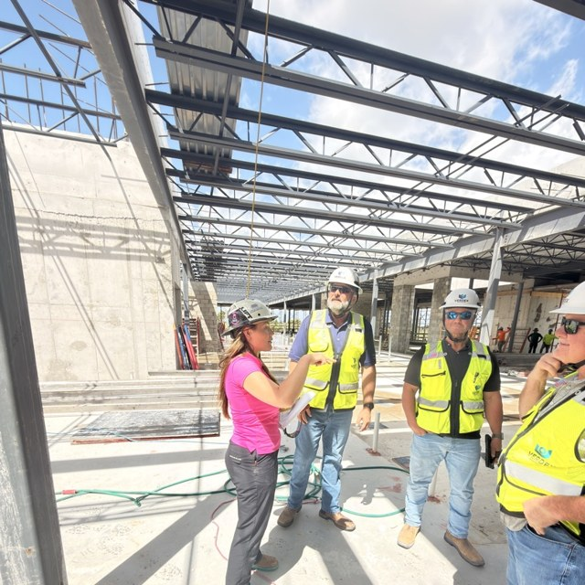

Author Profile
Rielly Walsh.
Chief Executive Officer, American Commercial Glass.
MTSU Concrete Industry Management
Education
BS Concrete Industry Management
Middle Tennessee State University
Background
Concrete & Stone
Aqualina Resort & Spa development
At ACG since
2022
Strategy, growth, operations
Office Footprint
3 offices opened
WPB · Naples · Tampa
